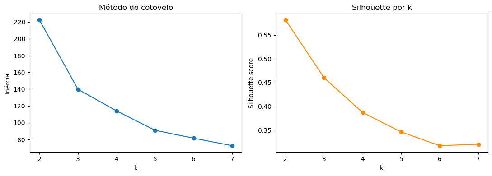
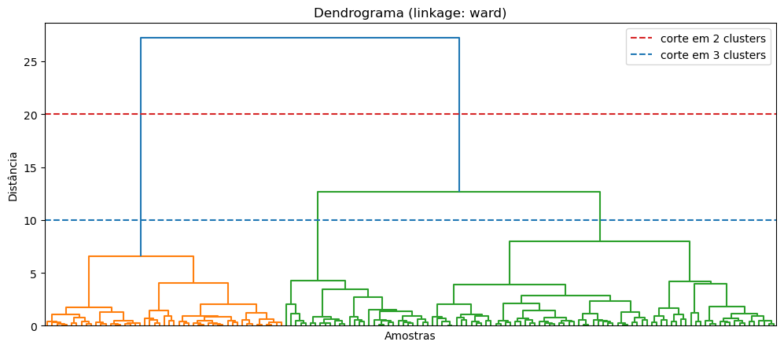

Em aprendizado supervisionado, o número de classes é um dado — está no rótulo. Em clustering, não: o algoritmo não sabe se deve encontrar 2 grupos, 5 ou 20. Essa decisão é sua, e existem três ferramentas clássicas pra te ajudar a tomá-la. Elas não são intercambiáveis — cada uma responde a uma pergunta ligeiramente diferente.
O método do cotovelo
Mede a inércia: a soma das distâncias ao quadrado de cada ponto até o centro (centróide) do cluster ao qual ele pertence — em outras palavras, o quanto os pontos estão espalhados dentro de cada grupo.
Na prática, você roda o K-Means para vários valores de k e plota a inércia
resultante. Ela sempre cai conforme k aumenta (mais grupos → grupos menores →
pontos mais perto do centro), até o caso trivial de k = n, onde cada ponto é o
seu próprio cluster e a inércia é zero. O que se procura é o ponto onde essa queda
desacelera — o "cotovelo" do gráfico.
A limitação principal: é uma leitura visual, sem um valor de corte exato, e só existe porque o K-Means é baseado em centróides — não dá pra aplicar em qualquer algoritmo de clustering.
Silhouette score
Para cada ponto, compara a distância média até os outros pontos do seu próprio cluster com a distância média até os pontos do cluster vizinho mais próximo. O resultado é um valor entre -1 e 1 por ponto — a média de todos os pontos vira o silhouette score do modelo.
Valor alto significa que o ponto está bem encaixado no seu grupo e bem separado dos demais; valor baixo (ou negativo) indica um ponto na fronteira, possivelmente mal classificado.
A vantagem sobre o cotovelo: é um número objetivo e comparável entre diferentes valores de
k, e funciona com qualquer algoritmo de clustering — não só K-Means.

Dendrograma
Diferente dos outros dois, o dendrograma não é uma métrica que aponta "qual k é melhor" — é a árvore inteira de fusões de um clustering hierárquico. Cada ponto começa como seu próprio cluster; a cada passo, os dois clusters mais próximos são fundidos, até sobrar um único cluster no topo.
Você não precisa decidir k antes — a árvore inteira já existe, e você a "corta"
numa altura escolhida depois de olhar o resultado. Quanto mais alta a fusão no gráfico, mais
forçada (menos natural) ela é.
A vantagem é ser visual e intuitivo — fácil de apresentar pra alguém que não é técnico — e
mostrar a estrutura em todos os níveis de granularidade ao mesmo tempo, não
só em um k específico.

ward) do dataset Iris. A linha vermelha corta em 2 clusters, a azul em 3 — repare que o ramo verde só se divide numa fusão bem mais alta (tardia) que a separação do ramo laranja.Os três, lado a lado
| Método | Tipo de saída | Precisa de k antes? | Funciona com qualquer algoritmo? |
|---|---|---|---|
| Cotovelo | Gráfico, leitura subjetiva | Sim (testa vários) | Não — só K-Means/centróide |
| Silhouette | Número objetivo (-1 a 1) | Sim (testa vários) | Sim |
| Dendrograma | Árvore visual completa | Não | Só clustering hierárquico |
O cotovelo não deu uma quebra clara. A silhueta apontou
k=2 (score de 0,58) como melhor que k=3 (0,46) — mesmo sabendo que
existem 3 espécies reais no dataset. O dendrograma confirmou a mesma leitura:
a fusão entre duas das três espécies acontece muito mais tarde na árvore que a separação da
terceira, ou seja, ele "enxerga" 2 grupos bem definidos, não 3.
Os três métodos concordaram entre si — e o motivo é biológico: duas das três espécies (versicolor e virginica) se parecem muito e se sobrepõem no espaço de features, enquanto a terceira (setosa) é claramente distinta. Rodando o K-Means com
k=3 mesmo assim (pra comparar contra o gabarito real), o modelo acertou
83,3% das flores — 100% de acerto na espécie distinta, e a maior parte dos erros
concentrada exatamente na dupla que se sobrepõe.
k diferente do que as métricas sugerem — desde que isso fique
documentado como uma decisão consciente, não escondido atrás do número.
Quando usar cada um
- Cotovelo: primeira leitura rápida, específica pra K-Means, quando você só quer uma noção inicial de ordem de grandeza para
k. - Silhouette: quando você precisa de um número defensável pra justificar a escolha de
k— funciona com qualquer algoritmo, inclusive pra comparar K-Means com clustering hierárquico. - Dendrograma: quando você não tem ideia de quantos grupos existem e quer explorar visualmente antes de decidir, quando a estrutura dos dados é naturalmente hierárquica/aninhada, ou quando vai apresentar o raciocínio pra alguém não técnico.
Na prática, os três se complementam: o cotovelo dá uma primeira impressão, a silhueta formaliza um número, e o dendrograma oferece uma segunda leitura visual e independente. Uma “terceira opinião” concordando com a segunda é bem mais forte do que confiar numa métrica isolada.